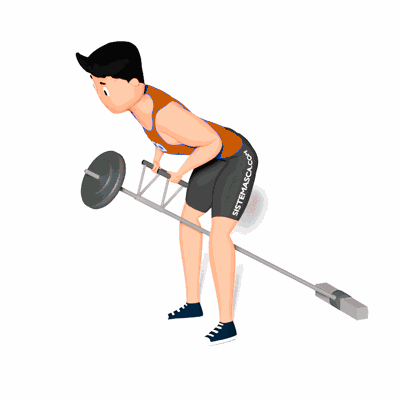

Remada Cavalinho

É um exercício composto que recruta todos os músculos das costas, principalmente dorsal, trapézio e romboides.
Ficha Técnica
Tipo: Musculação
Grupo Muscular: Costas
Aparelho: Nenhum
Músculos: Nenhum
Como realizar
- Em primeiro lugar é necessário encaixar a barra, se o espaço não possui um suporte para colocar a barra, poderá ser apoiada em algum canto da parede. 2. Encaixar o triângulo na barra e segurar esse acessório. 3. Curvar o corpo à frente, antes do tronco estar perpendicular ao solo, a coluna em posição neutra, abdômen contraído e as pernas flexionadas. 4. Puxar a barra em direção ao umbigo e contraia ao máximo os músculos das costas. 5. Estender os braços lentamente até retornar à posição inicial.
 RC STORE
RC STORE